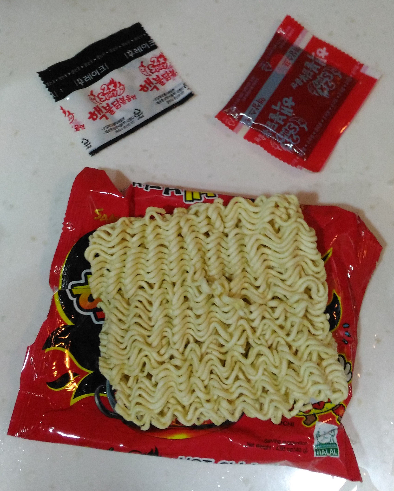
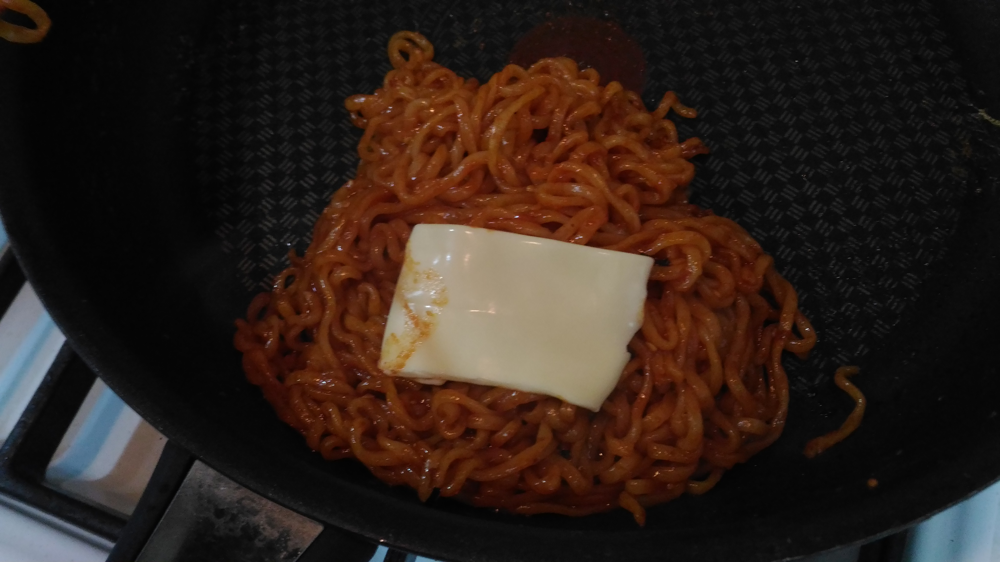

火雞辣炒泡麵
辣度*******(☄◣ω◢)☄
鹹度***
NT$ 49
購入地: 師大金興發生活百貨
內含物: 一塊粗面 一包辣醬 一包芝麻海苔
外加自備起司
製作過程:

步驟一: 面放入熱水煮2.多分鐘
步驟二: 預熱平底鍋，放入一小塊奶油
步驟三: 將面放入平底鍋
步驟四: 加入辣醬拌炒(建議先加半包，免得太辣 > <)
步驟五: 準備起鍋，蓋上起司，撒上海苔粉
A:它真的非常非常非常的辣，建議不吃辣的ㄆㄣˇ~ㄧㄡ~們，不要貿然
嘗試ㄛ~~~~p.s. 它的麵超超超Q der~~~
B:請不要用"平常吃泡麵加調味包的衝動"來加調味料,因為你會非常非常
後悔!!!!!!!!
如果想要體會舌頭麻掉,口水不受控制狂流的話,非常建議加整包調味料,
隔天後庭會很精彩!!
_(:з」∠)_